逆向生成前端頁面、JSR303、雲儲存圖片
SpringBoot微服務項目筆記-04
逆向生成前端頁面
- 首先一樣造出側邊欄
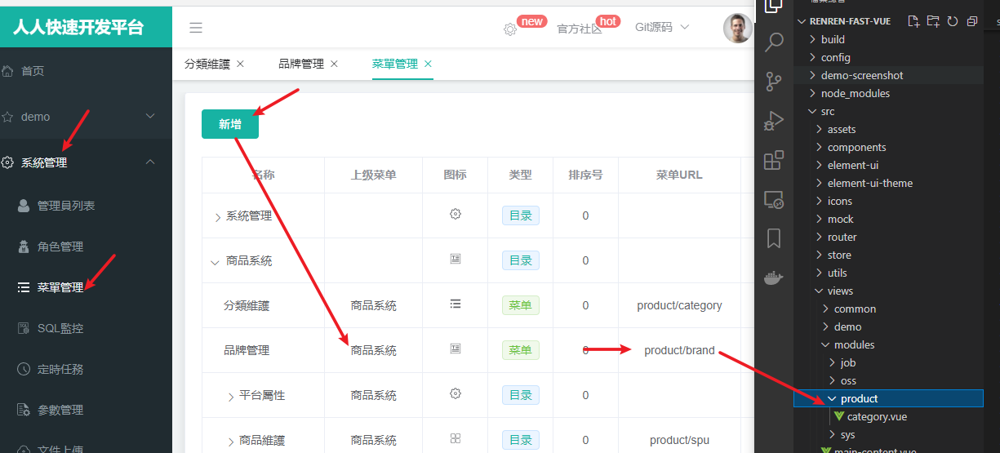
- 找到當初生成器產的那些，好樣的原來當初都一併造了，通通複製過去
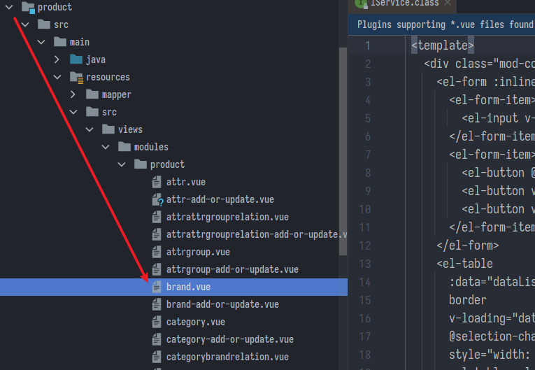
- 另外去前端把權限驗證先暫時關了，全部返回true

- 查看效果，什麼新增修改基本的CRUD人家全做好了，哭阿
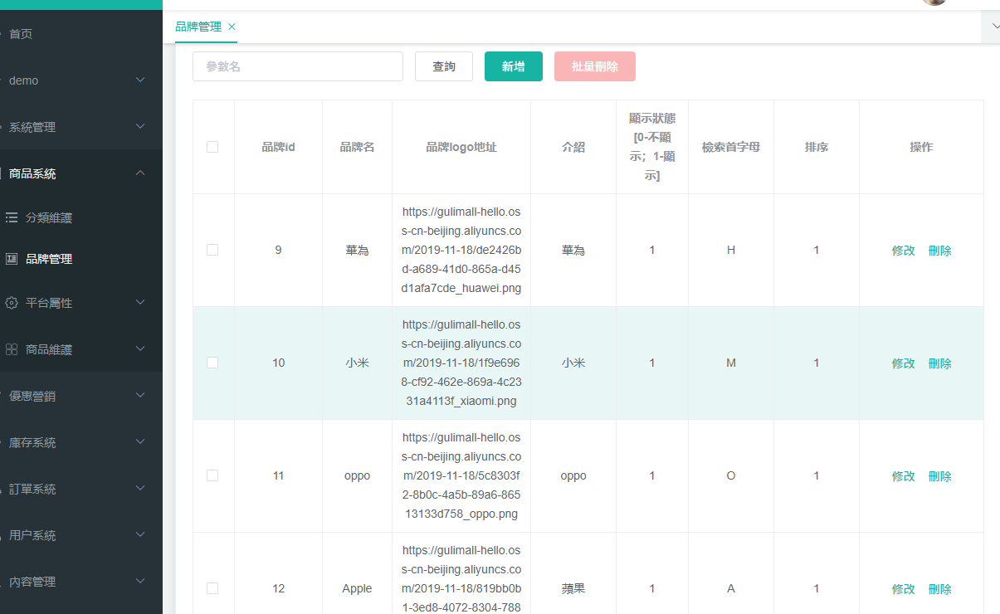
簡單修飾
顯示狀態換成開關
- 去餓了嗎找模板
:active-value，:是v-bind縮寫- 相當於把
showStatus的值在1跟0切換，而showStatus本就是pojo的屬性，所以直接傳給後端API就完事
<el-table-column
prop="showStatus"
header-align="center"
align="center"
label="顯示狀態"
>
<template slot-scope="scope">
<el-switch
v-model="scope.row.showStatus"
active-color="#13ce66"
inactive-color="#ff4949"
:active-value="1"
:inactive-value="0"
@change="updateBrandStatus(scope.row)"
></el-switch>
</template>
</el-table-column>
- 下面綁定一個監聽
@change的方法，調用後端API更新
updateBrandStatus(data) {
console.log("最新信息", data);
let { brandId, showStatus } = data;
//發送請求修改狀態
this.$http({
url: this.$http.adornUrl("/product/brand/update/status"),
method: "post",
data: this.$http.adornData({ brandId, showStatus }, false),
}).then(({ data }) => {
this.$message({
type: "success",
message: "狀態更新成功",
});
});
},
- 後端手動造一個API去更新
/**
* 切換顯示狀態
*/
@RequestMapping("/update/status")
//@RequiresPermissions("product:brand:update")
public R updateStatus(@RequestBody BrandEntity brand) {
brandService.updateById(brand);
return R.ok();
}
- 另外，新增或修改頁面也要換
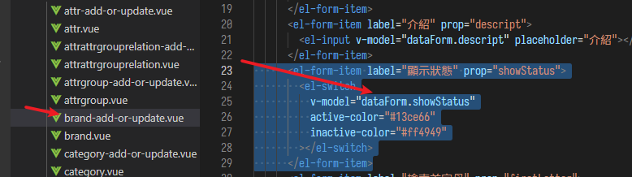
<el-form-item label="是否顯示" prop="showStatus">
<el-switch
v-model="dataForm.showStatus"
active-color="#13ce66"
inactive-color="#ff4949"
:active-value="1"
:inactive-value="0"
></el-switch>
</el-form-item>
- 並且下面預設值要改成1，我是覺得乾脆刪掉這欄，既然外面都有簡便的開關了，修改頁面想修改的不動，新增的預設不顯示就好了
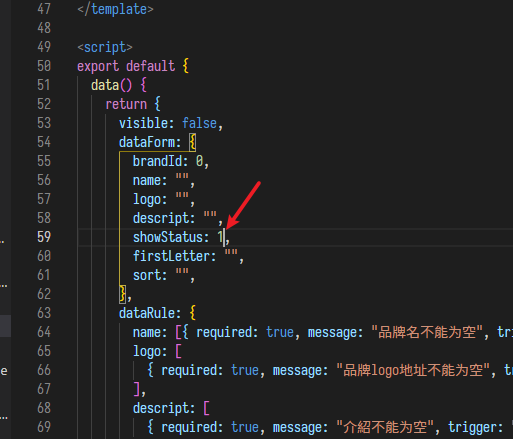
- 順手修改標籤寬度，否則本來字都擠在一起
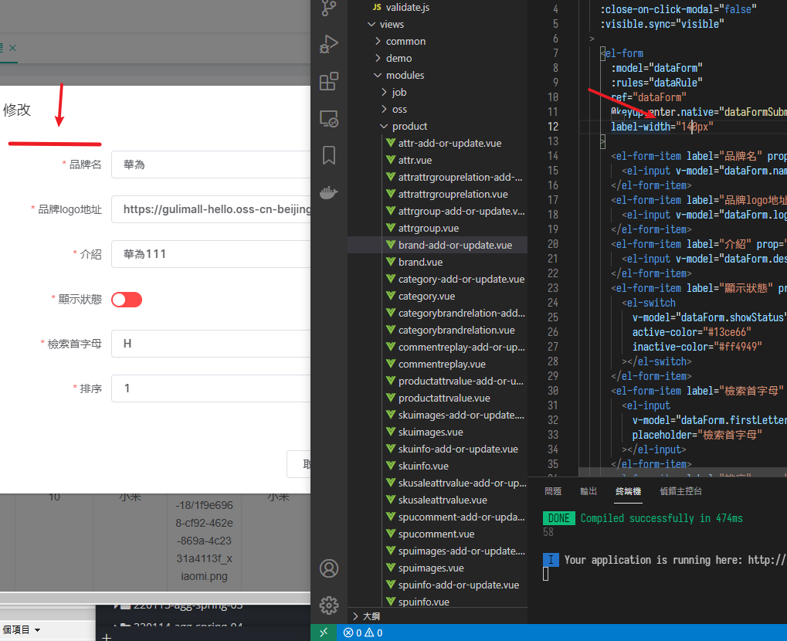
雲儲存圖片
- 課程用阿里雲OSS，我先用LeanCloud試試看，不行就docker拉一個minio
LeanCloud
<dependency>
<groupId>cn.leancloud</groupId>
<artifactId>storage-core</artifactId>
<version>8.2.0</version>
</dependency>
- 初始化，也挺簡單的
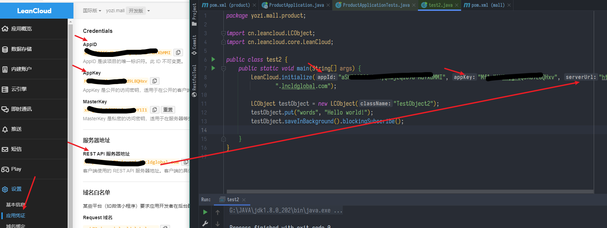
- 上傳
- 他這邊是用戶上傳給雲端，後台只做簽名驗證，自己做翻半天文檔還是不太會，先跳過
- //TODO
- 好吧，不太行，換用minio
minio
- docker
docker run -d --name minio -e "MINIO_ROOT_USER=root" -e "MINIO_ROOT_PASSWORD=root1234" -p 9000:9000 -p 9001:9001 minio/minio server /data --console-address ":9001"
- 他有2個阜，9000是server用的，9001是管理UI入口
- 替代方案的上傳圖片流程是:
- 前端後台用戶上傳圖片 -> API (HTTP檔案流) -> 網關重寫 -> 到服務中心找nacos -> 負載均衡到third-party模組 -> MinioController接收POST請求 -> 上傳圖片到minio並返回圖片網址給前端
後端設定
-
建立一個新子模組third-party
- 我才發現如果取包名用third-party，IDEA不認，有
-的不能是包名
- 我才發現如果取包名用third-party，IDEA不認，有
-
引依賴
<dependency>
<groupId>io.minio</groupId>
<artifactId>minio</artifactId>
<version>3.0.10</version>
</dependency>
- 由於common模組依賴有載入JDBC但這邊沒要用，可以暫時用啟動類的排除載入，在
@SpringBootApplication(exclude = - ThirdPartyApplication.java
@EnableDiscoveryClient
@SpringBootApplication(exclude = {DataSourceAutoConfiguration.class})
public class ThirdPartyApplication {
public static void main(String[] args) {
SpringApplication.run(ThirdPartyApplication.class, args);
}
}
- application.yml
spring:
application:
name: third-party
cloud:
nacos:
discovery:
server-addr: localhost:8848
config:
server-addr: localhost:8848
# 開啟文件上傳
servlet:
multipart:
enabled: true
max-file-size: 10MB #限制文件上傳大小為10MB
# MinIO對象存儲相關配置
minio:
endpoint: http://localhost:9000 #MinIO服務所在地址
bucketName: mall #存儲桶名稱
accessKey: root #訪問的key
secretKey: root1234 #訪問的秘鑰
- 造一個MinioController
@Api(tags = "MinioController", description = "MinIO存儲管理")
@Controller
@RequestMapping("/minio")
public class MinioController {
private static final Logger LOGGER = LoggerFactory.getLogger(MinioController.class);
@Value("${minio.endpoint}")
private String ENDPOINT;
@Value("${minio.bucketName}")
private String BUCKET_NAME;
@Value("${minio.accessKey}")
private String ACCESS_KEY;
@Value("${minio.secretKey}")
private String SECRET_KEY;
@ApiOperation("文件上傳")
@RequestMapping(value = "/upload", method = RequestMethod.POST)
@ResponseBody
public R upload(@RequestParam("file") MultipartFile file) {
try {
// 創建一個MinIO的Java客戶端
MinioClient minioClient = new MinioClient(ENDPOINT, ACCESS_KEY, SECRET_KEY);
boolean isExist = minioClient.bucketExists(BUCKET_NAME);
if (isExist) {
LOGGER.info("存儲桶已經存在！");
} else {
// 創建存儲桶
minioClient.makeBucket(BUCKET_NAME);
}
String filename = file.getOriginalFilename();
SimpleDateFormat sdf = new SimpleDateFormat("yyyyMMddHHmmssZ");
// 設置存儲對象名稱
String objectName = sdf.format(new Date()) + filename;
// 使用putObject上傳一個文件到存儲桶中
minioClient.putObject(BUCKET_NAME, objectName, file.getInputStream(), file.getContentType());
String objectUrl = minioClient.getObjectUrl(BUCKET_NAME, objectName);
LOGGER.info("文件上傳成功!");
MinioUploadDto minioUploadDto = new MinioUploadDto();
minioUploadDto.setName(filename);
minioUploadDto.setUrl(objectUrl);
return R.ok().put("data", minioUploadDto);
} catch (Exception e) {
LOGGER.info("上傳發生錯誤: {}！", e.getMessage());
}
return R.error();
}
@ApiOperation("文件刪除")
@RequestMapping(value = "/delete", method = RequestMethod.POST)
@ResponseBody
public R delete(@RequestParam("objectName") String objectName) {
try {
MinioClient minioClient = new MinioClient(ENDPOINT, ACCESS_KEY, SECRET_KEY);
minioClient.removeObject(BUCKET_NAME, objectName);
return R.ok();
} catch (Exception e) {
e.printStackTrace();
}
return R.error();
}
}
- 為了跨域的設定: GlobalCorsConfig.java
@Configuration
public class GlobalCorsConfig {
/**
* 允許跨域調用的過濾器
*/
@Bean
public CorsFilter corsFilter() {
CorsConfiguration config = new CorsConfiguration();
//允許所有域名進行跨域調用
config.addAllowedOrigin("*");
//允許跨越發送cookie
config.setAllowCredentials(true);
//放行全部原始頭信息
config.addAllowedHeader("*");
//允許所有請求方法跨域調用
config.addAllowedMethod("*");
UrlBasedCorsConfigurationSource source = new UrlBasedCorsConfigurationSource();
source.registerCorsConfiguration("/**", config);
return new CorsFilter(source);
}
}
- 和一個用來簡單放結果的DTO
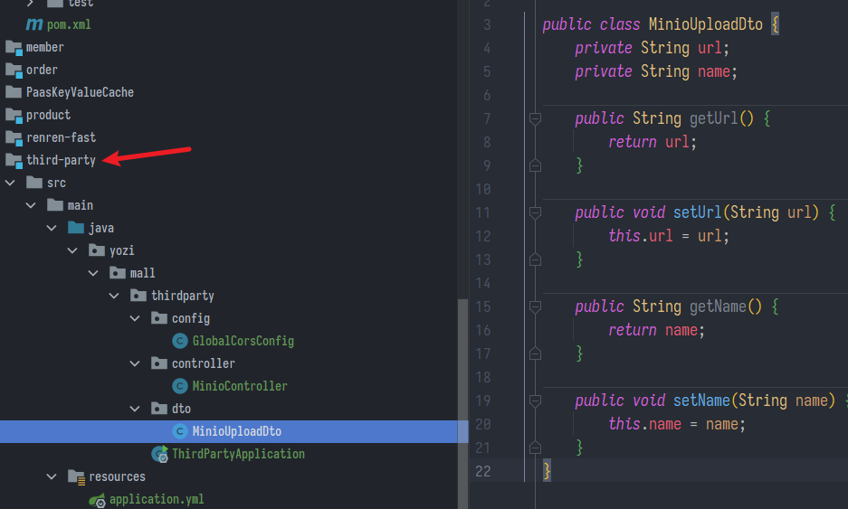
前端設定
- 教學的OSS方法是做不到了，只能讓圖片流經後端再上傳
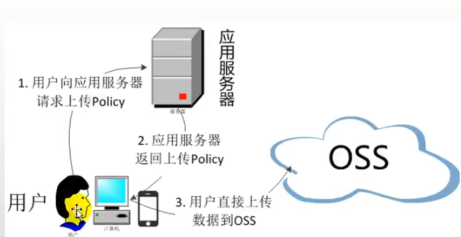
-
前端登入後台，一登入就跳回登入畫面，看LOG顯示"遇到Token失效，请重新登录"，刪掉cookie再登就OK了
- 我發現是minio導致的，因為人人後台預設是 http://localhost:8001/#/login
- minio後台預設是 http://localhost:9001/login
- 同樣是localhost他們的cookie打架了，暫時用2個瀏覽器分別開吧
-
魔改一下singleUpload.vue
<template>
<div>
<el-upload :action="useOss?ossUploadUrl:minioUploadUrl" :data="useOss?dataObj:null" list-type="picture" :multiple="false" :show-file-list="showFileList" :file-list="fileList" :before-upload="beforeUpload" :on-remove="handleRemove" :on-success="handleUploadSuccess" :on-preview="handlePreview">
<el-button size="small" type="primary">點擊上傳</el-button>
<div slot="tip" class="el-upload__tip">只能上傳jpg/png文件，且不超過10MB</div>
</el-upload>
<el-dialog :visible.sync="dialogVisible">
<img width="100%" :src="fileList[0].url" alt="">
</el-dialog>
</div>
</template>
<script>
// import { policy } from "./policy";
export default {
name: "singleUpload",
props: {
value: String,
},
computed: {
imageUrl() {
return this.value;
},
imageName() {
if (this.value != null && this.value !== "") {
return this.value.substr(this.value.lastIndexOf("/") + 1);
} else {
return null;
}
},
fileList() {
return [
{
name: this.imageName,
url: this.imageUrl,
},
];
},
showFileList: {
get: function () {
return (
this.value !== null && this.value !== "" && this.value !== undefined
);
},
set: function (newValue) {},
},
},
data() {
return {
dataObj: {
policy: "",
signature: "",
key: "",
ossaccessKeyId: "",
dir: "",
host: "",
// callback:'',
},
dialogVisible: false,
useOss: false, //使用oss->true;使用MinIO->false
ossUploadUrl: "http://macro-oss.oss-cn-shenzhen.aliyuncs.com",
minioUploadUrl: "http://localhost:88/api/third-party/minio/upload",
};
},
methods: {
emitInput(val) {
this.$emit("input", val);
},
handleRemove(file, fileList) {
this.emitInput("");
},
handlePreview(file) {
this.dialogVisible = true;
},
beforeUpload(file) {
let _self = this;
if (!this.useOss) {
//不使用oss不需要獲取策略
return true;
}
return new Promise((resolve, reject) => {
policy()
.then((response) => {
_self.dataObj.policy = response.data.policy;
_self.dataObj.signature = response.data.signature;
_self.dataObj.ossaccessKeyId = response.data.accessKeyId;
_self.dataObj.key = response.data.dir + "/${filename}";
_self.dataObj.dir = response.data.dir;
_self.dataObj.host = response.data.host;
// _self.dataObj.callback = response.data.callback;
resolve(true);
})
.catch((err) => {
console.log(err);
reject(false);
});
});
},
handleUploadSuccess(res, file) {
this.showFileList = true;
this.fileList.pop();
let url = this.dataObj.host + "/" + this.dataObj.dir + "/" + file.name;
if (!this.useOss) {
//不使用oss直接獲取圖片路徑
url = res.data.url;
}
this.fileList.push({ name: file.name, url: url });
this.emitInput(this.fileList[0].url);
},
},
};
</script>
<style>
</style>
- 回到網關增加一個指派規則 (其實是自欺欺人，因為要固定連到localhost:9000才能上傳跟訪問圖片，當作練習吧)
- id: upload_route
uri: lb://third-party
predicates:
- Path=/api/third-party/**
filters:
- RewritePath=/api/third-party/(?<segment>.*),/$\{segment}
- 完成
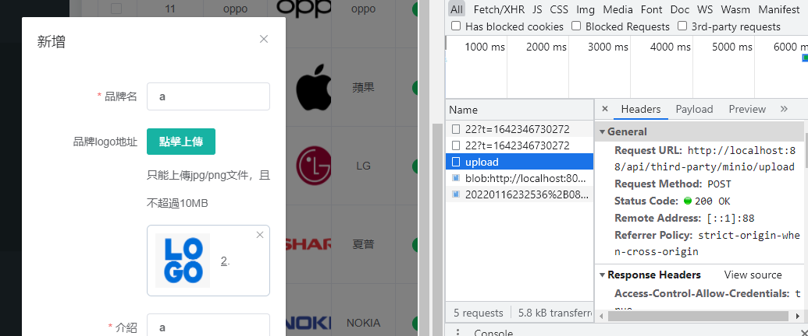
JSR303驗證
防止使用者亂輸入資料也能上傳到資料庫
- 前端有簡單驗證過輸入限制，但還要防有人直接自訂HTTP請求發送
- 規範叫JSR303 Bean Validation，就是說想把參數賦給Bean要先過這關檢驗，官方參考實現是hibernate Validator驗證框架，Spring也有提供良好支援
- PS.與Hibernate ORM沒有關係
- 常用的限制規則如下
空檢查
- @Null 驗證物件是否為null
- @NotNull 驗證物件是否不為null, 無法查檢長度為0的字串
- @NotBlank 檢查約束字串是不是Null還有被Trim的長度是否大於0,只對字串,且會去掉前後空格.
- @NotEmpty 檢查約束元素是否為NULL或者是EMPTY.
Booelan檢查
- @AssertTrue 驗證 Boolean 物件是否為 true
- @AssertFalse 驗證 Boolean 物件是否為 false
長度檢查
- @Size(min=, max=) 驗證物件(Array,Collection,Map,String)長度是否在給定的範圍之內
- @Length(min=, max=) Validates that the annotated string is between min and max included.
日期檢查
- @Past 驗證 Date 和 Calendar 物件是否在當前時間之前,驗證成立的話被註釋的元素一定是一個過去的日期
- @Future 驗證 Date 和 Calendar 物件是否在當前時間之後 ,驗證成立的話被註釋的元素一定是一個將來的日期
- @Pattern 驗證 String 物件是否符合正則表示式的規則,被註釋的元素符合制定的正則表示式,regexp:正則表示式 flags: 指定 Pattern.Flag 的陣列,表示正則表示式的相關選項。
數值檢查
建議使用在Stirng,Integer型別,不建議使用在int型別上,因為表單值為空串時無法轉換為int,但可以轉換為Stirng為"",Integer為null
- @Min 驗證 Number 和 String 物件是否大等於指定的值
- @Max 驗證 Number 和 String 物件是否小等於指定的值
實作
-
先引依賴
spring-boot-starter-validation -
在POJO註解想要驗證的規則

- 在Controller的方法參數前加上
@Valid
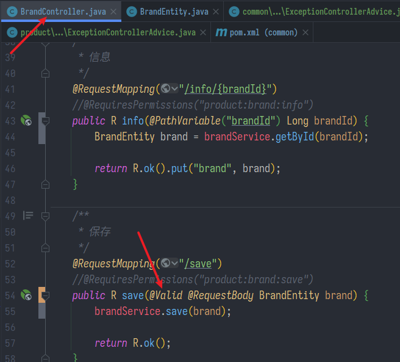
- 已經可以驗證了，但還能加上統一的異常管理並且返回驗證的資訊
@RestControllerAdvice = @ControllerAdvice + @ResponseBody- 意思是負責抓Controller的異常，並且用JSON格式返回
@Slf4j // 印在日誌
@RestControllerAdvice(basePackages = "yozi.mall.product.controller")
public class ExceptionControllerAdvice {
@ExceptionHandler(MethodArgumentNotValidException.class) // 針對哪類異常
public R handleVaildException(MethodArgumentNotValidException e) {
log.error("資料驗證異常", e.getMessage(), e.getClass()); // 印在日誌
// 從異常中獲取資料
BindingResult bindingResult = e.getBindingResult();
// 裝在map中返回給前端看
HashMap<String, String> errorMap = new HashMap<>();
bindingResult.getFieldErrors().forEach(fieldError -> errorMap.put(fieldError.getField(),
fieldError.getDefaultMessage()));
return R.error(400, "資料驗證異常").put("data", errorMap);
}
}
- 返回的結果範例:
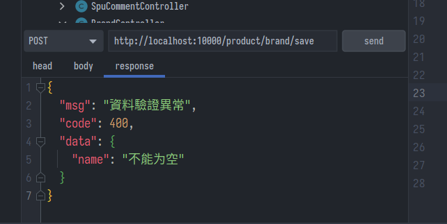
- 統一封裝錯誤碼，將業務代碼集中成一個枚舉類，放在
.common.exception包下
/**
* @Description: 錯誤狀態碼枚舉
* 錯誤碼和錯誤信息定義類
* 1. 錯誤碼定義規則為5位數
* 2. 前兩位表示業務場景，最後三位表示錯誤碼。例如：100001。10:通用 001:系統未知異常
* 3. 維護錯誤碼后需要維護錯誤描述，將他們定義為枚舉形式
* 錯誤碼列表：
* 10: 通用
* 001：參數格式校驗
*/
public enum BizCodeEnum {
UNKNOWN_EXCEPTION(10000, "系統未知異常"),
VALID_EXCEPTION(10001, "參數格式校驗失敗"),
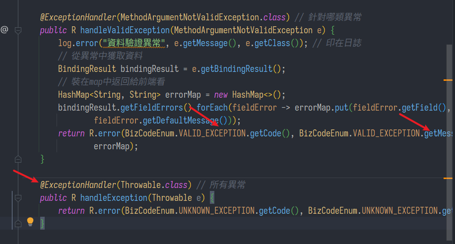
分組檢驗
- 在POJO檢驗的註解上綁定一個接口(接口內容可以為空，起到一個標籤作用)
/**
* 品牌id
*/
@Null(message = "新增不能指定Id",groups = {AddGroup.class})
@NotNull(message = "修改必須指定品牌id",groups = {UpdateGroup.class})
@TableId
private Long brandId;
- 把Controller方法參數前本來的
@Valid換成@Validated@Valid為JSR303規範的，@Validated是由spring提供的強化版
// 標記使用修改分組
public R update(@Validated(UpdateGroup.class) @RequestBody BrandEntity brand){
brandService.updateById(brand);
return R.ok();
}
- 但是這樣很坑，一旦啟用分組，則POJO下面每一個屬性的檢驗規則都要分到組，否則就不生效
自定義檢驗
我覺得新手學這個太超綱了，先跳過
- 如果正則式還不能滿足，可以自訂，相當於自訂一個註解類
- 參考 https://www.bilibili.com/video/BV1np4y1C7Yf?p=69&spm_id_from=pageDriver
上次修改於 2022-01-21